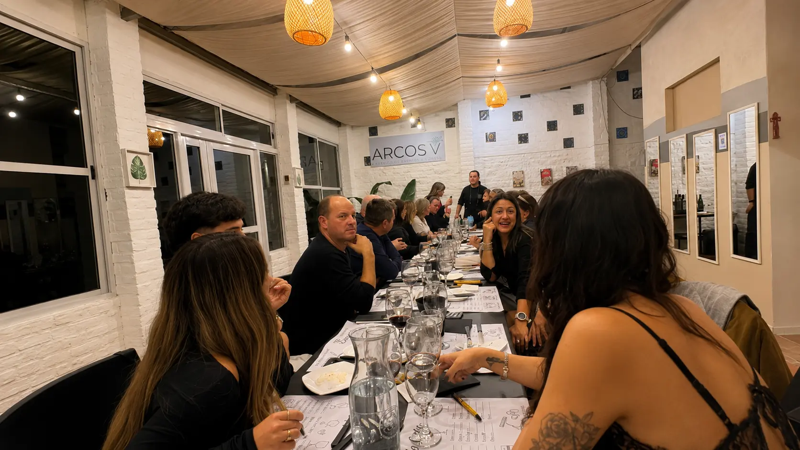
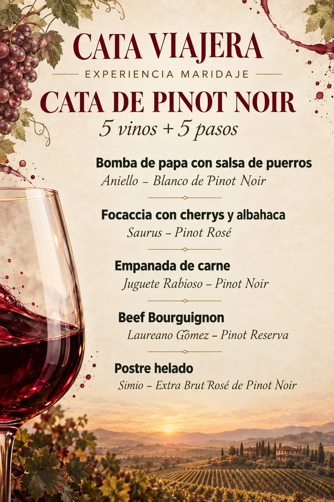
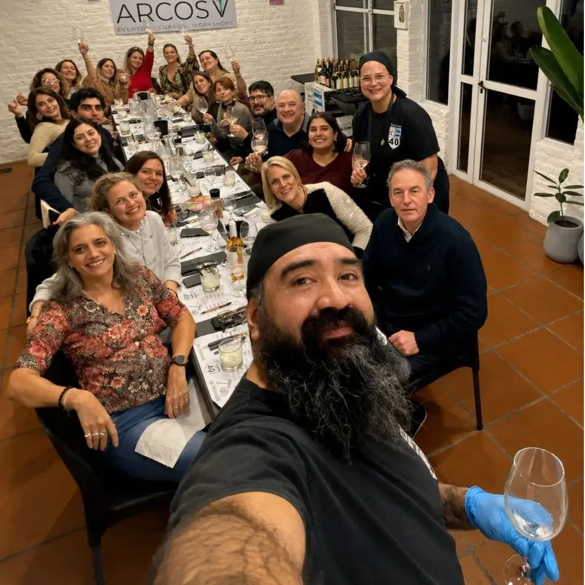
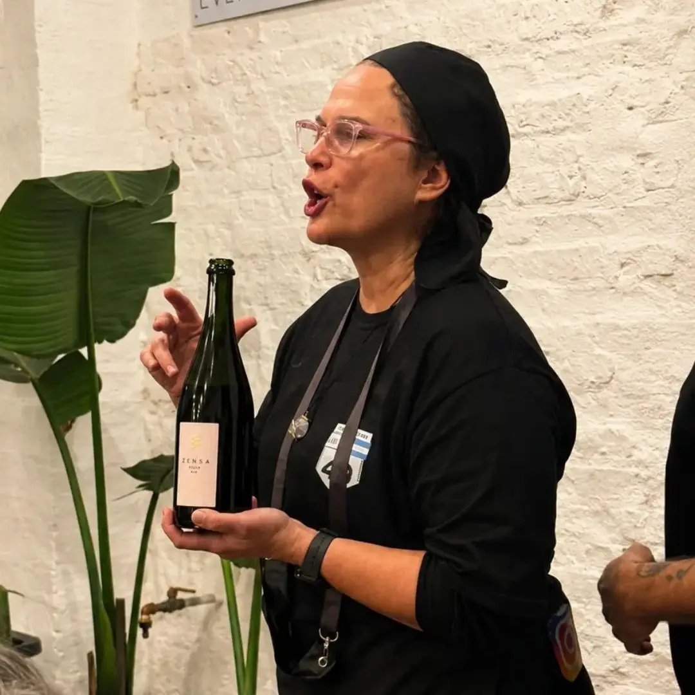
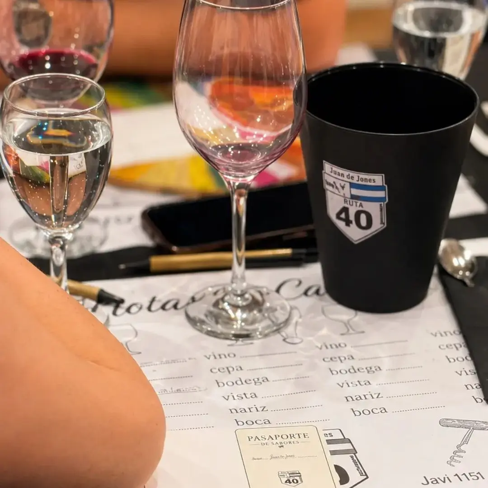

GASTRONOMIA
Cinco vinos y cinco pasos para recorrer todas las caras del Pinot Noir: del blanco y el rosado al tinto de reserva, cerrando con un espumante.
Los lugares son limitados. Siguiente fecha: sábado 14 de noviembre (temática a confirmar).
Val y Javi, de Vino en Jawa, arman cada encuentro alrededor de una temática distinta: una región, un grupo de cepas, o el desafío de reconocer etiquetas a ciegas. Van guiando la degustación copa por copa, contando de dónde viene cada vino y qué buscar en la vista, la nariz y la boca.
Se toma sentado, en una sola mesa larga, con un maridaje pensado para acompañar cada paso. Son grupos chicos, así que hay lugar para preguntar sin sentirse examinado. No hace falta saber nada de vino para venir.
Las catas son al caer la noche y duran alrededor de cuatro horas, aunque la mesa casi siempre se estira un rato más. Se puede venir solo, en pareja o con amigos: la experiencia compartida hace el resto.
Por Arcos V ya pasaron una cata de vinos de Entre Ríos con comida del Litoral, otra dedicada a los vinos del Norte argentino, y una edición a ciegas.
Cata a ciegas
Agosto 2026



Escribinos y te contamos las fechas, el precio y qué incluye.
Consultar por WhatsApp